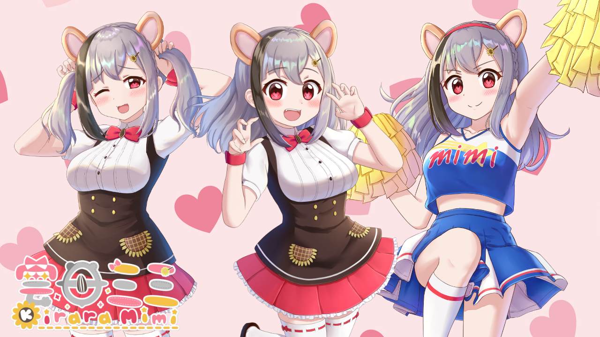

KiraraMimiプロフィール
2020年2月20日デビューの個人Vtuber雲母ミミ（きららみみ）
人懐っこくてテンション高めの元気なジャンガリアンハムスターの女の子
2021年１月に9日間でYoutubeチャンネル登録者数が７万人増、海外で先に人気がでた逆輸入系Vtuberとして国内でも名前を知られるようになる
YoutubeやTwitchで日本語英語ポルトガル語を用いて言語学習やゲーム実況など配信中
| 名前 | 雲母ミミ（きららみみ） |
|---|---|
| 誕生日 | 20XX年4月15日 |
| 分類 | ジャンガリアンハムスター |
| 性別 | ♀ |
| 好きなこと | アニメ鑑賞/ダンス/楽器演奏/ゲーム/旅行/お勉強 |
| 家族 | ママ（2Dデザイナー）：りりぅむ パパ（3Dデザイナー）：出口貞夫 |
| ハッシュタグ | なんでも：#雲母ミミ ファンアート：#みみみゅーじあむ ハッシュタグの付いたファンアートは配信サムネイルなど活動に使用させていただく場合があります。いつも素敵なイラストありがとうござます…!!! |
History活動履歴
20XX.04.15-----雲母家（ハムスター）の長女として誕生
2020.02.20-----VTuberデビュー（Twitter/動画投稿）
2020.04.03-----初配信
2020.05--------Youtubeチャンネル登録者1,000人到達
2020.08--------Youtubeチャンネル登録者5,000人到達/3D化記念配信
2020.10--------Youtubeチャンネル登録者10,000人到達
2020.11--------Youtubeチャンネル登録者20,000人到達
2021.01--------Youtubeチャンネル登録者100,000人到達
2021.07--------地上波ラジオ初出演
2021.07--------テレビ初出演
2021.08--------雑誌初出演
2021.04--------世界初生放送中にNFTを配布
2021.09--------Youtubeチャンネル登録者250,000人到達
2022.04--------オリジナル曲「Kirara Happy Life」を発表
2022.08--------海外オフラインイベントACGHK2022出演